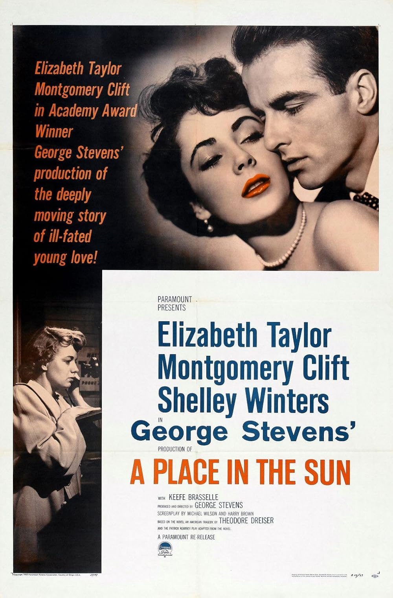

A Place in the Sun
24th Academy Awards
(Oscars 1952)
9 Nominations, 6 Awards
| Nominations | ||
|---|---|---|
| Category | Nominees | Result |
| Best Motion Picture | George Stevens | Nominated |
| Actor | Montgomery Clift | Nominated |
| Actress | Shelley Winters | Nominated |
| Directing | George Stevens | Won |
| Writing (Screenplay) | Harry Brown and Michael Wilson | Won |
| Cinematography (Black-and-White) | William C. Mellor | Won |
| Film Editing | William Hornbeck | Won |
| Costume Design (Black-and-White) | Edith Head | Won |
| Music (Music Score of a Dramatic or Comedy Picture) | Franz Waxman | Won |